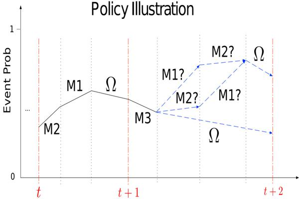

Deep Reinforcement Learning

Imagine a patient in critical condition. What and when should be measured to forecast detrimental events, especially under the budget constraints? We answer this question by deep reinforcement learning (RL) that jointly minimizes the measurement cost and maximizes predictive gain, by scheduling strategically-timed measurements. We learn our policy to be dynamically dependent on the patient's health history. To scale our framework to exponentially large action space, we distribute our reward in a sequential setting that makes the learning easier. In our simulation, our policy outperforms heuristic-based scheduling with higher predictive gain and lower cost. In a real-world ICU mortality prediction task (MIMIC3), our policies reduce the total number of measurements by 31% or improve predictive gain by a factor of 3 as compared to physicians, under the off-policy policy evaluation.